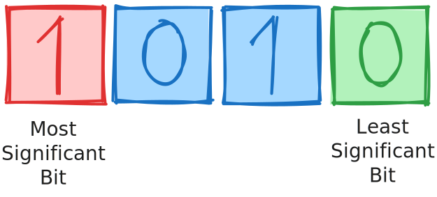
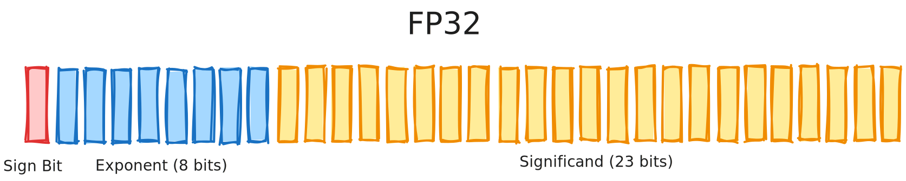
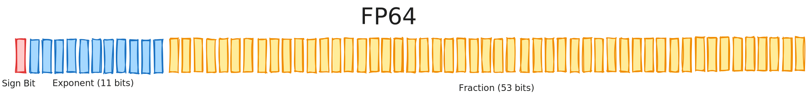

Data types
A data type is a technical categorization of data (to clarify, data concerns any and all information stored on a computer represented as symbols, such as a 'bit' or a 'b', which represent binary digits) that affects its interpretation by a computer. Thus, the data type of a variable dictates the type of storable data.
A brief overview of data types
The JVM recognizes two broad categories of data types: primitive types and reference types. Primitive data types represent numerical, logical or character data, which are fundamental classifications of data which critical protocols within the JVM inherently recognizes.
If a field is assigned to a value that is primitive data, the JVM allocates enough memory to directly store the size of the value in stack memory, which is unordered memory that prioritizes speed in recalling values over the ability to reliably store and keep data in a particular location: Not a concern for data that is as non-idiosyncratic as an integer number or a particular letter of the English alphabet.
In contrast, if a field is assigned to reference data, the JVM merely allocates enough memory for the variable to store the address of the data in memory, largely because reference types are often significantly larger than primitive types and it would be impractical to store directly in stack memory. Thus, reference data is stored in heap memory instead, which can reliably retain data in an unchanging location.
Once a field, method or another structure is imbued with a particular type, whether a primitive or reference type, it cannot be explicitly altered. This particular type system is called static typing, where the data type of a field must be stated during declaration in source code and must be clear to the JVM during compilation (and before runtime).
Primitive data types
The JVM reserves eight keywords for primitive data, whereby each represents a differing interpretation of binary data. In fact, there can be established four informal classifications of primitive data: four keywords define integers (their formatting and arithmetic abiding by the two's complement standard), two keywords define real numbers (and other numbers, per the scientific standard IEEE 754), one defines characters (encoded in UTF-16) and the remaining keyword defines basic logic (true and false).
Primitive data types that represent integers
Two's complement is a common representation of integers using binary data (represented using 0s and 1s). If the bits of an integer were correctly laid out in a line, the leftmost bit would be the most-significant bit (MSB), which is the bit that has the greatest affect on the decimal value of the integer. In contrast, the rightmost bit would be the least-significant bit (LSB).
In two's complement, the MSB is used to determine the signage (whether a number is positive, negative or neither) of an integer. If the MSB has a value of 0, then the integer is positive. Likewise, the integer is negative if the MSB has a value of 1.
The range (the least or greatest, negative or positive value that a number may be equal to, starting from 0, which is neither negative nor positive) of a two's complement integer is calculable using the following formulas: min = -2n-1 and max = 2n-1-1, where n is the size of the integer measured in bits. The base of both formulas is 2, as binary is a base-2 (two possible values) representation of decimal numbers, which are base-10 (hence, why scientific notation uses a base of 10).
However, as demonstrated by the two formulas above, the maximum value of an integer is 1 less than the absolute of the minimum value. This disparity is a result of the MSB being used for signage. As a value of 0 represents a positive number, the MSB cannot contribute to the decimal value for all positive numbers.
| Bit (Value): | 1 | 0 | 1 | 0 |
|---|---|---|---|---|
| Binary Calculation: | -(1*23) | 0*22 | 1*21 | 0*20 |
| Decimal Value: | -8 | 0 | 2 | 0 |
-(1*23) + (0*22) + (1*21) + (0*20) =
1*-8 + 0 + 1*2 + 0 =
-6.
| Keyword | Size (bits) | Minimum value (binary) | Minimum value (decimal) | Maximum value (binary) | Maximum value (decimal) | Notes |
|---|---|---|---|---|---|---|
|
8 | -27 | -128 | 27-1 | 127 | Used to conserve memory |
|
16 | -215 | -37,768 | 215-1 | 37,767 | Larger range than byte; still conserves memory |
|
32 | -231 | -2,147,483,648 | 231-1 | 2,147,483,647 | Commonly used; balance between range and memory usage |
|
64 | -263 | -9,223,372,036,854,775,808 | 263-1 | 9,223,372,036,854,775,807 | Used for very large integer values |
Primitive data types that represent real numbers
Floating-point arithmetic, summarily, is arithmetic performed to determine the scientific notation of a real number, which from left to right includes: the significand (an integer or fractional that contains the significant digits of a number), the radix (or base; used to represent a number according to some system) and the exponent that the radix is raised to the power of.
number = signficiant * baseexponent
IEEE 754 is a technical norm that standardizes the formatting, rounding rules, operations and the handling of exceptions and errors of floating-point numbers— and is a widespread choice of implementation across hardware and software, including Java. The standard explicitly defines how 32-bit and 64-bit large FP numbers are formatted, which are commonly called single-precision and double-precision formats, respectively.
 
These FP formats correspond directly to the two reserved keywords that represent real numbers: float
and double.
Approximating the minimum and maximum ranges of a floating-point value is more complicated a process than that of integers, as special values (such as subnormal numbers, which provide additional precision for extremely small or large numbers) and bias (an integer added to the exponent to permit representation of positive and negative numbers).
The bias is subtracted from the original exponent to determine the exponent that performs the calculation. The
bias of float is 127 and the bias of double is 1023. Thus, accounting for bias, the
minimum and maximum values of either data type are provided below:
Let:
- f = number of fraction bits
- n = number of exponent bits
- bias = 2n - 1 - 1
- emin = 1 - bias
- emax = (2n - 2) - bias
Then:
min = 1.0 * 2emin
max = (2 - 2-f) * 2emax
float (32-bit):
- f = 23, n = 8, bias = 127
- emin_float = 1 - 127 = -126
- emax_float = (28 - 2) - 127 = 254 - 127 = 127
- minfloat = 1.0 * 2-126 ≈ 1.17549435 * 10-38
- maxfloat = (2 - 2-23) * 2127 ≈ 3.4028235 * 1038
double (64-bit):
- f = 52, n = 11, bias = 1023
- emin_double = 1 - 1023 = -1022
- emax_double = (211 - 2) - 1023 = 2046 - 1023 = 1023
- mindouble = 1.0 * 2-1022 ≈ 2.2250738585072014 * 10-308
- maxdouble = (2 - 2-52) * 21023 ≈ 1.7976931348623157 * 10308
The same as above, only now accounting for denormalized (subnormal) numbers, which provide greater precision for extremely small (close to 0) and extremely large numbers (approaching infinity).
Let:
- f = number of fraction bits
- bias = exponent bias
- Subnormal numbers have an exponent of 1 - bias, and the leading significand bit is 0 (not
1)
Then:
minsub = 21 - bias - f
maxsub = (1 - 2-f) * 21 - bias
float (32-bit):
- f = 23, bias = 127
- minsub_float = 2-126 - 23 = 2-149 ≈ 1.4 * 10-45
- maxsub_float = (1 - 2-23) * 2-126 ≈ 1.17549421 * 10-38
double (64-bit):
- f = 52, bias = 1023
- minsub_double = 2-1022 - 52 = 2-1074 ≈ 4.9 *
10-324
- maxsub_double = (1 - 2-52) * 2-1022 ≈ 2.2250738585072010 *
10-308
Still, whilst being familiar with the limits of what a float or double value can store,
it is perhaps more useful to understand to what decimal precision each type can represent a value. Each
binary digit of a significand contributes log10(2), or approximately 0.30103 decimal digits to decimal
precision. Thus, a float value is precise to 24 bits * 0.30103, or 7.22 decimal digits and a
double value is precise to 53 bits * 0.30103, or 15.95 decimal digits.
| Keyword | Size (bits) | Min (denormal, decimal) | Min (normal, decimal) | Max (decimal) | Decimal Precision (places) | Notes |
|---|---|---|---|---|---|---|
|
32 | ~1.4 * 10-45 | ~1.17549435 * 10-38 | ~3.4028235 * 1038 | ~7 digits | Single-precision floating point |
|
64 | ~4.9 * 10-324 | ~2.2250738585072014 * 10-308 | ~1.7976931348623157 * 10308 | ~15-16 digits | Double-precision floating point; more accurate |
Character data
The data type char can store any single UTF-16 code unit, which entirely accounts for the
Basic Multilingual Plane (BMP), which includes 2^16, or 65,536 unique examples. Over 63,000 are assigned
characters, such as: alphabetical characters, iconographic characters, mathematical operators, miscellaneous
symbols and historic scripts. The rest are dedicated to non-character code points that are used for other encoding
standards that Unicode (though, not necessarily char or Java) supports.
char also supports escape sequences (such as '\n', which returns a newline, or '\t', which
represents a horizontal tab) and Unicode code points, which is a Unicode code point (such as 'U+0041') that
is represented using ASCII code (which translates 'U+0041' into '65') and is then stored as a UTF-16 code unit
(here, '0x0041').
Logic data
The data type boolean represents basic logic and can store one of two volumes: true or
false. Technically, the size of a boolena value is 1 bit (as the binary digit '0' represents
false and '1' to represent true), though the value is always padded
(supplementary memory consumed to increase practicality and functionality) to convenience the JVM in finding the
value within stack memory.
Literals and default literals
A literal is the technical term for the value assigned to a field and the value that a field stores. In Java, a field that is declared, yet not initialized, cannot remain unassigned a value. Yet, declaring an instance variable may be declared and not initialized immediately thereafter. Instead, the JVM recognizes the uninitialized instance variable and assigns it a default literal, which is performed covertly and requires no input from the programmer.
Below are the default literals of each type, assigned to each field— and fields, not instance variables, as whilst the latter may remain uninitialized, fields declared within methods must be initailized on the same line that they were declared upon:
/**
* All four keywords that represent integers share the same default literal: '0'
*
* Though 'long' values undercutting or exceeding the range of an 'int' value must be suffixed with the letter 'L'
* Otherwise, the JVM assumes that the value assigned to a field of type 'long' is 'int', which will throw an error.
*/
byte varBy = 0;
short varSh = 0;
int varIn = 0;
long varLo = 0L; // The L is technically unnecessary until the value is lesser than -2^31 or greater than 2^31-1
/**
* 'float' and 'double' share the same default literal: 0.0
*
* Though 'float' values must be suffixed with the letter 'F' or 'f', regardless of its value.
* Otheriwse, the JVM assumes that the value assigned to a field of type 'float' is 'double', which will throw and error.
*
* A 'double' value may be suffixed with the letter 'D' or 'd', though this is not mandatory.
*/
float varFl = 0.0f; // The suffixed letter is always required to assigned a float value
double varDo = 0.0d; // The suffixed letter is not required in any circumstance other than for clarity
/**
* The default literal of 'char' is '\u0000' (represents Unicode code point 0, which is effectively a 'null' value)
*/
char varCh1 = '\u0000';
char varCh2 = 0; // ASCII code does not have to be quoted in single quotation marks
/**
* The default literal of 'boolean' is 'false'
*/
boolean varBo = false;
Reference data types
The JVM does not necessarily reserve keywords in the same manner as it does for primitive data types. In fact, reference data is more accurately defined as a hierarchy of increasingly specific implementations of broad structures. The Java language, specifically the Java Development Kit (JDK) includes libraries and other collectives that contain large amount of classes are broadly related by purpose and functionality.
Built-in classes concern those included in libraries within the JDK, which define universal features that all developers use to program applications: Strings, classes, arrays, interfaces, etc.
User-defined data concerns reference data that is defined by the programmer (using the JDK), such as a custom class that defines the attributes and functionality of a spreadsheet in a financial application.
Thus, there exists an indefinite number of classes between those defined in the JDK and those by programmers, the list below includes general categorizations of reference data:
- Classes: Built-in and user-defined classes used to define attributes and behaviour
- Arrays: Homogenous container objects that forms a list of elements
- Interfaces: Abstract types that define a contract that implementing classes must adhere to
- Enumerations: A specialized class representing a fixed set of constants
- Lambdas: Permits functional programming in Java, a predominant OOP language
For the purposes of simplicity, only classes are mentioned here. However, the data structure above (including classes) are more extensively covered in dedicated webpages.
Universally used classes
There exists a hierarchy between classes (a concept called inheritance) where aspects of one class are
provided to another. In Java, there are over 4500 classes and interfaces defined by and contained within the JDK.
The Object class is the progenitor of all other built-in and user-defined classes, which are
descendents of the class; some of which are used across nearly every Java application.
Examples include:
A String object is a sequence of char values that is immutable, whereby a field
assigned a String object cannot be modified, only reassigned an entirely new String value.
The Math class defines mathematical operations that utilize mathematical semantics (which, to note,
the class does not define) to perform formulaic procedures in a concise, repeatable manner.
Wrapper classes (such as Integer or Double) permit object representations of
their respective primitive data type, which subsequently permits the utilization of methods previously incomptable
with primitive data.
An Array object is a type-homogenous list of elements that is a fixed size. Comparably, an ArrayList
is a (largely) type-homogenous list of objects with a size that is variable at runtime.
/**
* Objects are often created using the 'new' keyword, though not always.
*/
String varSt = new String;
varSt = "Hello, World!";
/**
* String varSt = "Hello, World!" is valid, legitimate syntax even if the syntax does not use the 'new' keyword.
*/
System.out.println(varSt); // Prints out Hello, World!
int x = 16;
int y = Math.sqrt(x);
System.out.print(y); // Prints out '4'
Integer varIntObj = new Integer(10);
/**
* A feature called 'autoboxing' can automatically convert a primitive value into an object.
* If one programs the following: Integer varIntObj = 10;
* The JVM recognizes that varIntObj is an Integer object assigned to an int value and automatically converts '10' into an Integer object.
*/
int[] emptyArrayFiveElementsLarge = new int[5]; // An array without elements that can store up to five elements.
int[] filledArrayFiveElementLarge = {0, 1, 2, 3, 4}; // An array with elements that can also store up to five elements.